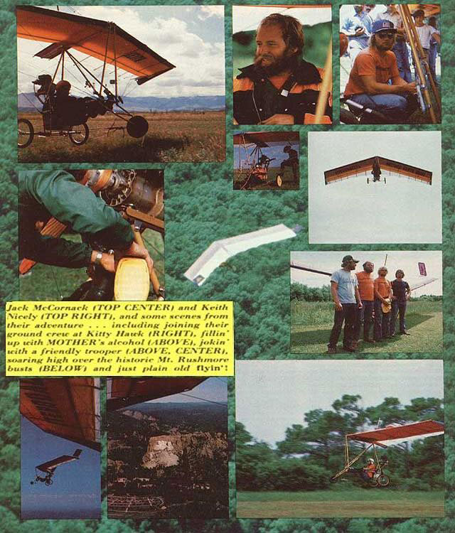

When Keith Nicely and I decided to pilot our Pterodactyl Fledgling microlight airplanes from the West Coast to the Experimental Aircraft Association's Fly-In at Oshkosh, Wisconsin, we didn't have much trouble coming up with a solid economic rationalization for the trip. After all, I'm president of Pterodactyl Ltd-and Keith is my San Francisco area dealer-so it was easy enough to chalk the cross-country jaunt up to good business promotion.
But-while such practical justification served to explain the excursion to our business partners-Nicely and I were actually interested in the adventure because it offered us three weeks of real freedom and a chance to relive the freewheeling spirit of aviation's early days . . . seeing the country by air and landing anyplace that looked inviting!
(Incidentally, the Fledgling is just about the ideal craft for the sort of odyssey that we had in mind. Microlight aircraft, you see, can land in a small field ... are relatively inexpensive-about $3,000 in kit form-to purchase . . . and, best of all, are classed as hang gliders by the government's regulation agencies. You don't even need a license to fly'em! )
On the 4th of July, Keith and I unfolded the wings of our craft (the planes looked a little flimsy when we considered the distance ahead of us) and flew northeast from Monterey, California . . . after taking a quick swoop over the Pacific to make sure that we were, indeed, leaving from the West Coast.
Our first day's flight was pretty much limited to soaring over the foothills and lowlands while we experimented with an air-to-air communication system. We worked out hand signals for "low on fuel" and "follow me", and big grins for "we're in the sky and the world is absolutely beautiful" . . . just the essentials.
Before proceeding with the details of our trip, I should take time to introduce the earthbound members of our group . . . who couldn't even communicate with us using hand signals! Brad Shaver and Joe England had agreed to follow us-in exchange for gas money- in a middle-aged pickup truck loaded with spare parts, a canoe, a camp stove, and assorted other items that couldn't be carried on the Pterodactyls. (Brad and Joe thought they were going on a fishing trip. Those two guys sure made our journey a whole lot more pleasant than it would have been without 'em . . . but I hope they got more fishing done on the way back than they did while they had two crazy pilots to worry about! )
Our second day of flight took us over the Sierra mountains. We leveled the little planes off at around 10,000 feet- keeping warm enough in our snowmobile suits-and breathed in the cleanest air either one of us could remember. The view was magnificent . . . seeming close, very real, and altogether different from the scenery-parading-by-the-windows effect one gets inside the store-bought Spam cans that most pilots fly!
We landed at Stead (a former Air Force base just north of Reno, Nevada) with our first range of mountains successfully put behind us. From that point on, we would be able (if we wanted to) to fly around-rather than over-any other peaks we might encounter.
At Elko, Nevada our air-and-ground caravan decided to head north . . . both in search of cooler weather and because, after all, we had lots of time and hadn't bothered to plan any restrictive route or schedule.
Keith and I spent a few days camping in the Idaho mountains (while Brad and Joe drove off in search of lakes and monster trout) before we flew-this time by choice-over the Grand Teton . . . accompanied by three guys in a Cessna 172. (To be completely accurate, the Cessna fellows tried to accompany us. However, the hot weather and thin air actually hindered the "real" airplane more than it did our Pterodactyls . . . so we were able to fly about 1,000 feet higher than it could!) While passing over the peak, Keith soared in close to exchange a few air-to-ground words with a group of mountain climbers. I'm not sure just what was said . . . except that there was a mutual questioning of sanity.
Our next extended stop took place at the Diamond L Ranch about 30 miles from Jackson, Wyoming . . . a next-to-ideal rest spot, with a big grassy meadow "runway" and no telephones. From there we headed over the mighty Rockies themselves, chugging along at nearly 15,000 feet! That particular jaunt made us awfully grateful that we'd brought along cold weather gear. It's right chilly three miles in the air . . . I sure wouldn't want to try flyin' that high during the winter!
Sometime during the first portion of the trip, a new spirit took hold of the group. Our concern about keeping on a schedule-which hadn't been all that great a worry since the beginning of the journey-somehow vanished altogether. Without really knowing it, we were becoming barnstormers!
For those of you who aren't familiar with the term as it's used in aviation, barnstorming isn't an activity . . . it's a lifestyle, requiring little more than an unusual aircraft, a limited budget, and no concern for where you'll be in another day (or week!). A barnstormer is an entertainer who performs for food and enough fuel to get to another place where he or she can put on a show ... and whose profit is in the incidental joys of barnstorming and in the flying itself.
I figure that Keith, Brad, Joe, and I provided about the best entertainment value in the continental United States . . . and Mexico! A family could feed us breakfast for less than the cost of a movie, and get a show the likes of which they "ain't never seen before". (After all, what do you think any youngster worth his or her jeans Would remember longer: a movie, or the day the airplanes landed in the back yard?)
And just what were those "incidental joys" that helped keep us enchanted with the barn-storming' way of life? Well, they were many and varied, but included the day that a group of shy young ladies cooked us some trout near Cody, Wyoming . . . the experience of racing a storm over the Black Hills . . . the time I flew-full throttle-just a few feet above the ground so a friendly state trooper could register my speed on his radar set . . . casually landing by a lone farmer to ask directions, with both of us pretending it was an everyday occurrence . . . Keith and me putting on a two-man air show at a local fair for 50 bucks and all the beer we cared to drink . . . and just generally resting on haystacks, planes at the ready, waiting for a heavy fog to lift. The weeks went fast, but I'll always remember them.
All good things must end, though, and before long our barnstorming days came to a close . . . it was time to head to the EAA's Fly-In. As many of you know (especially if you've read the story on page 99 of this issue of MOTHER), "Oshkosh" is the biggest aviation event in the world, and we were the smallest aircraft ever to fly into it. Both Keith and I were pleased (and, I admit, a little surprised) to find that we were taken seriously. We even received awards for "outstanding contributions to sport aviation and cross-country flying" (which simply meant that we got where we planned to go without committing any blunders serious enough to get either the feds or the public mad at us).
The Fly-In covers quite a lot of ground -and it's nigh onto impossible to see everything there-so we were really pretty lucky to run into MOTHER's crew, who had come to promote alcohol as an alternative fuel. I found the fellows working with the wood-burning still, puttin' in corn mash and takin' out moonshine. They had already converted a pickup truck, a Volkswagen, and an experimental airplane to ethanol, and it didn't take long to figure that we could set up the Pterodactyls so they'd run on 'shine, too.
As it turned out, MOTHER's staffers were as curious about our lengthy flight as we were about the possibilities of alcohol fuel and before long-the magazine folks offered us enough "home brew" to carry our journey to its logical conclusion . . . a landing on the East Coast. It was a chance to complete a bona fide cross-country jaunt!
Needless to say, we didn't take much convincing. Keith and I simply called our coworkers in California. "Sorry," we said, "but it looks like we'll be gone another couple of weeks. We hate to do it the extra miles are sure to take a lot out of us-but the publicity ought to help us sell airplanes." The old "it's good for the business" line fooled 'em again, and we were off on two more weeks of vacation!
Since I'd assembled a third Fledgling at the Fly-In (just to show folks how easily the kits can be put together), we asked Paul Yarnall-a good friend and our New York dealer-if he wanted to fly along with us. Like any red-blooded American aviator, Paul jumped at the chance.
Our cobbled-up Pterodactyl-to-alcohol modification consisted of nothing more than opening up each engine's adjustable main jet another turn or two. Of course, we could have made the planes into much more efficient alcohol-burners by increasing the engine compression and so forth, but we were a couple of thousand miles from our shop and-with apologies to the Appalachians-had put all of the country's big mountains behind us.
Our objective wasn't to set any kind of speed record, anyway, so we didn't need maximum horsepower . . . we just wanted to demonstrate that ethanol could be used to fuel long flights. (We left Keith's "Fledge" stock and running on gasoline . . . just for the sake of comparison.)
As it turned out, our group made pretty poor time during the first week after leaving Oshkosh. For one thing, the weather turned really rotten. When bad squalls came up, we had no choice but to land in a convenient field and sit out the storms. We spent a lot of time hiding under our plane's wings, while hailstones fell all around us, with nothing better to do than exchange long and detailed observations about how much fun we weren't having.
Another factor that helped hold us back was my jury-rigged alcohol fuel conversion. It seemed that the engines would run beautifully with the throttles open, but that the jetting wasn't right for low-power flying . . . and idling was out of the question altogether! Since we normally run at low RPM while we're cruising, the engines would sometimes quit and (surprise) we'd find ourselves piloting gliders! The Pterodactyls soar about as well as do hang gliders, so such malfunctions weren't a danger. They did, however, contribute to our slow pace.
Despite such hassles (which we worked out with a little fine carburetor tuning as we went along), a rather remarkable concept began to filter into my brain as the miles went by: The fuel I was flying on hadn't depleted any nonrenewable resources. It was actually nothing more (or less!) than solar energy ... converted to sugar by plants and then to alcohol by yeast! The money that it cost went-in part-to the farmer who grew the grain . . . instead of to some foreign oil magnate. And, better yet, my exhaust consisted of water vapor and carbon dioxide . . . I wasn't doing the earth or the sky any harm by flying!
We found that a lot of the people we met on the ground were enthusiastic about homebrewed fuel, too. Lots of folks have developed pretty strong feelings about the gasoline shortage. In fact, there are even people who think that big business and big government are hindering development of alternate power sources . . . I don't know where anyone gets such crazy ideas ....
I do, however, know that aviation provides a great means of advocating our independence from petroleum fuels. Flying still has a little of its original magic about it, and it sure does get attention. What better answer could there be to the "experts" who' say that ethanol fuel "works in the laboratory, and in 30 years might be a practical source of energy" than to fly away . . . with the alcohol - sweet exhaust scent providing ample proof that the home-brewed power source works just fine right now!
After the end of the first post-Oshkosh week, Paul had to head home and get back to work. He said he'd had a good time, but it's too bad that-just after he left-the weather turned nice . . . and I got the carburetor sorted out to the point where, except for getting slightly fewer miles per gallon, my plane ran as well on alky as did Keith's on gasoline. We brightened up considerably and got back into the spirit of barnstorming.
Our rough flight plan called for us to turn left at Tennessee, then follow highway 40 into North Carolina. And, since we were pretty close to MOTHER's hometown of Hendersonville, we decided to drop in for a visit. After getting directions to the Eco-Village (where MOTH. ER's August seminars were underway), we buzzed right on over.
Our entrance disrupted the classes a bit, I'm afraid. The instructors gave up, everyone ran out by the lake, and we dazzled 'em all with our famous 25 cents air show. Then, for a grand finale, Keith and I landed in a clearing by the campground (that strip of land has since been dubbed Eco International Airport).
Brad and Joe caught up with us, and we all spent the day at the seminars . . . having as much fun as kids at summer camp. During the evening's cookout I did a little more "hey, look at me" flying, and the following morning we continued on our way.
Two days-and a few hundred miles later we circled once over the Atlantic (to complete our coast-to-coast trip) and touched down at Kitty Hawk, North Carolina. I have to admit I was kind of relieved that the journey was over.
Ironically, the National Parks Service wouldn't let us land at the airstrip commemorating the Wright brothers' first flights. It was the only airstrip-on the whole transcontinental trip-at which we were refused permission to land!
The owners of a nearby driving range and mini-golf course came to the rescue, though . . . so we did get to land within sight of the Wright memorial. (It's just too bad that Wilbur and Orville weren't still around to put in a good word for us with the bureaucrats in charge of the landing field.)
That was the end of the adventure. We said our goodbyes and Keith packed up his Fledgling to catch an airliner home. Brad and Joe headed off in the pickup with gleams in their eyes and fishing tackle ready-saying they'd probably see me in about a month. . . "depending on how well they're biting".
And me? Well, I stayed around Kitty Hawk for a couple of days to accommodate the local press and television news crews, then I had to get back to the Pterodactyl plant and back to work.
It's kind of good to be back home, too . . . and I'm already trying to figure what I'll have to do to get next summer off!
|
 PHOTOS BY THE PTERODACTYL CREW & MOTHER EARTH NEWS Jack McCornack (top center) and Keith Nicely (top right), and some scenes from their adventure ... including joining their ground crew at Kitty Hawk (right), fillin' up with Mother Earth News alcohol fuel (above center), jokin' with a friendly trooper (above center), soaring high over the historic Mt. Rushmore busts (below) and just plain old flying'! |
|
|